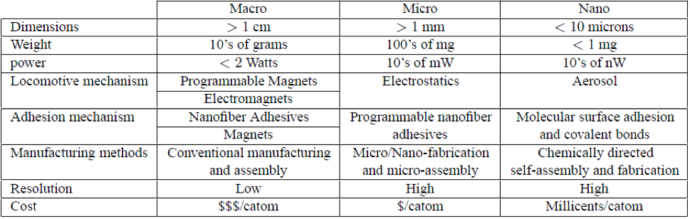
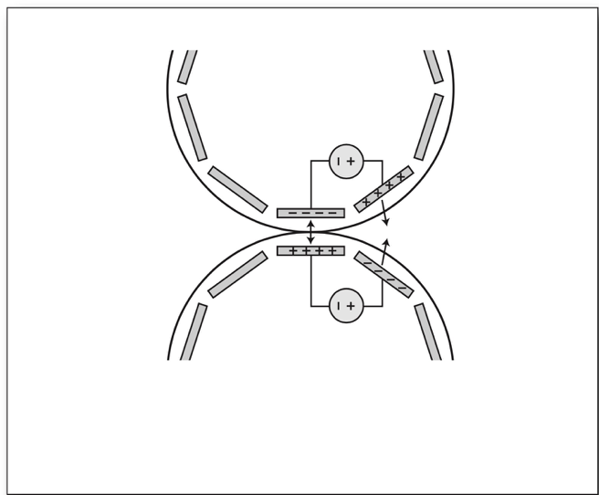
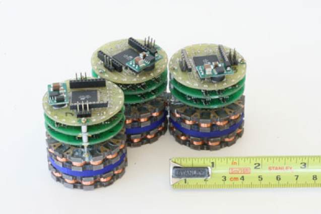
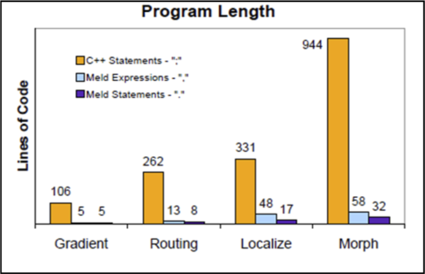
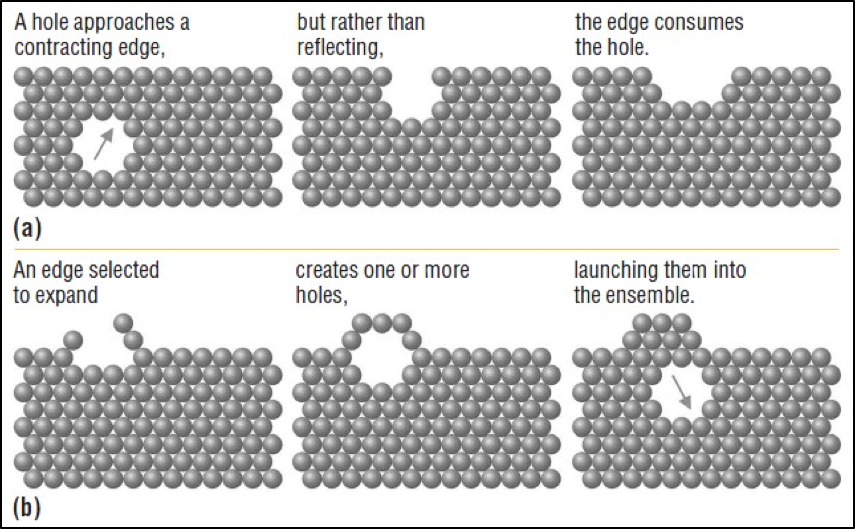
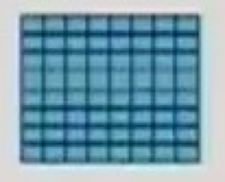
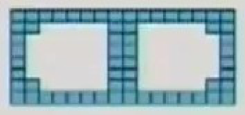
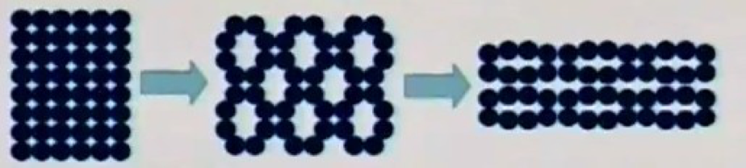
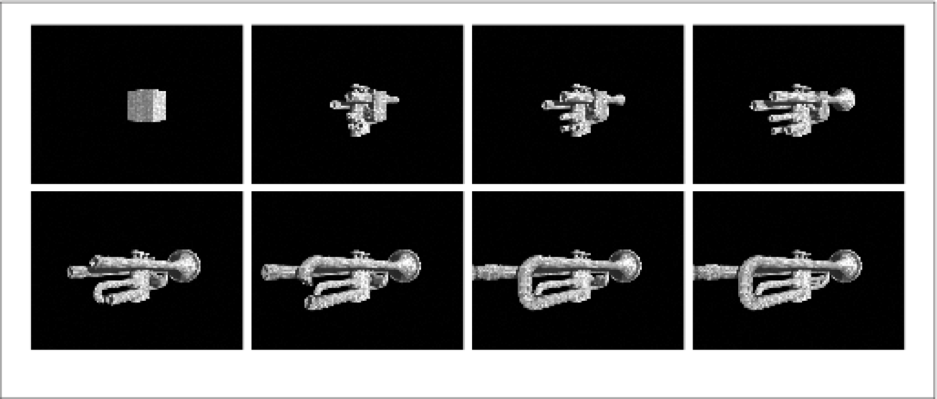
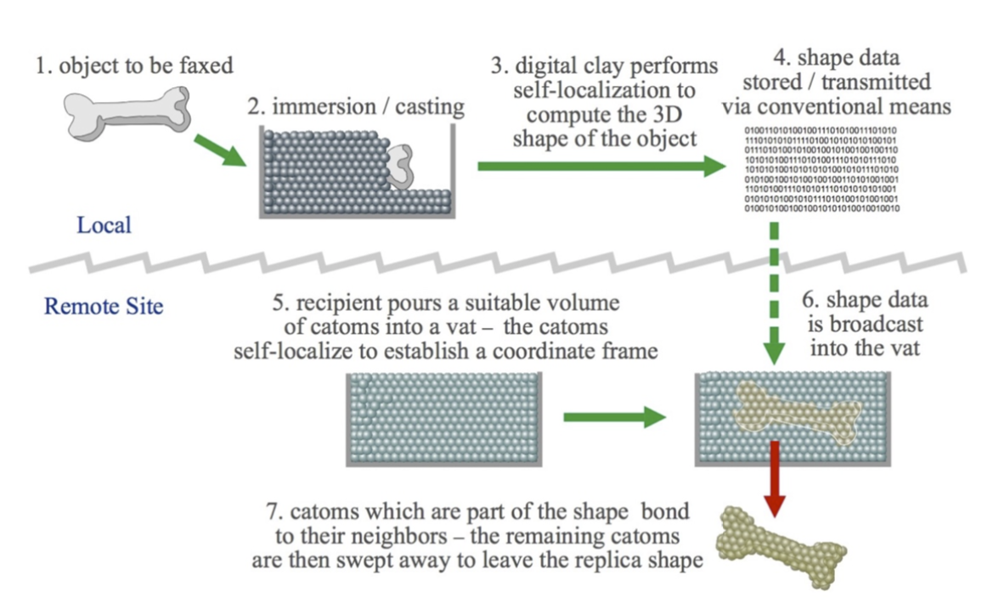

Claytronics is a futuristic concept which aims to break the barriers of physical limitation of tangible 3D objects. The idea is to make an object composed of millions of programmed nanoscale robots, each moving relative to each other in a controlled, coordinated manner to change shape and acquire properties as designed. Claytronics consists of individual components called Claytronic Atoms or Catoms. As the actual hardware is to manipulate itself to the desired form, each catoms consists of CPU, a network device for communication, single pixel display, sensors, a means to adhere to each other and a power source. Organizing all of the communication and actions between millions of catoms also require highly advanced algorithms and programing language. This idea can be broadly referred to as Programmable Matter. Claytronics has the potential to significantly affect many areas of daily life, such as telecommunication, human-computer interface, entertainment, etc.
Claytronics is about programmable matter that takes the concept of modular robots to a new extreme and is expected to revolutionize communications. The idea of modular robots has been around for some time. In general, the goal of these projects was to adapt to the environment to get over its limitations in moving objects across big distances. Claytronics propose a new media type, Pario which is a logical progression from audio and video and seeks to transfer 3D objects in the real world. To make this goal real, claytronics must scale to millions of micron-scale units.
Claytronics is made up of individual components, called catoms that can move three-dimension individually and in unison as a group to maintain a 3D shape, and compute state information (with possible assistance from other catoms in the ensemble). Each catom is a self-contained unit with a CPU, an energy store, a network device, a video output device, one or more sensors, a means of locomotion, and a mechanism for adhering to other catoms.
A Claytronics system forms a shape through the interaction of the individual catoms. For example, suppose we wish to synthesize a physical “copy” of a person. The catoms would first localize themselves to the ensemble. Once localized, they would form a Hierarchical Network in a distributed fashion. The hierarchical structure is necessary to deal with the scale of the ensemble; it helps to improve locality and to facilitate the planning and coordination tasks.
The goal would be specified abstractly, perhaps as a series of “snapshots” or as a collection of virtual deforming “forces” and then broadcast to the catoms. Compilation of the specification into local actions would then provide each catom with a plan for achieving the desired global shape. At this point, the catoms would start to move around each other using forces generated onboard, either magnetically or electrostatically, and adhere to each other using, for example, a Nano fiber-adhesive mechanism. Finally, the catoms on the surface would display an image; rendering the color and texture characteristics of the source object. Except for taste and smell, it will be a replica of the original. If the source object begins to move, a concise description of the movements would be broadcast allowing the catoms to update their positions by moving around each other. The result will be a real-time replica of the object which will be the next big leap in the communication industry.
A fundamental requirement of Claytronics is that the system must scale to huge numbers of interacting catoms and hardware part deals with designing of catoms.

Design of catoms should be simple, and each will have at least following four capabilities:
Computation: It is believed that catoms could take advantage of existing microprocessor technology. Given that some modern microprocessor cores are now under a square millimeter, they believe that a reasonable amount of computational capacity should fit on the several square millimeters of the surface area potentially available in a 2mm-diameter catom.
Motion: Although they will move, catoms will have no moving parts. This will enable them to form connections much more rapidly than traditional microrobots, and it will make them easier to manufacture in high volume. Catoms will bind to one another and move via electromagnetic or electrostatic forces, depending on the catom size. Imagine a catom that is close to spherical, and whose perimeter is covered by small electromagnets. A catom will move around by energizing a particular magnet and cooperating with a neighboring catom to do the same, drawing the pair together. If catoms are free, they will spin equally about their axes, but if one catom is held rigid by links to its neighbors, the other will swing around the first, rolling across the fixed catom's surface and into a new position. Once the catom sizes shrink to less than a millimeter or two Electrostatic actuation will be required. The process will be essentially the same, but rather than electromagnets, the perimeter of the catom will be covered with conductive plates. By selectively applying electric charges to the plates, each catom will be able to move relative to its neighbors.

Power: Catoms must be able to draw power without having to rely on a bulky battery or a wired connection. Under a novel resistor-network design the researchers have developed, only a few catoms must be connected for the entire ensemble to draw power. When connected catoms are energized, this triggers active routing algorithms that distribute power throughout the ensemble.
Communication: Communication is perhaps the biggest challenge that researchers face in designing catoms. An ensemble could contain millions or billions of catoms, and because of the way in which they pack, there could be as many as six axes of interconnection.
The researchers at Carnegie Mellon University have developed various prototypes of catoms. The prototype that is most like what developers hope catoms will become is the planar catom. These take the form of 44 mm diameter cylinders. These cylinders are equipped with 24 electromagnets arranged in a series of stacked rings along the cylinder’s circumference. Movement is achieved by the catoms cooperatively enabling and disabling the magnets to roll along each other’s surfaces. Only one magnet on each catom is energized at a time. These prototypes can reconfigure themselves quite quickly, with the uncoupling of two units, movement to another contact point, and recoupling taking only about 100 ms. Power is supplied to the catoms using pickup feet on the bottom of the cylinder. Conductive strips on the table supply the necessary power.

In the current design, the catoms are only able to move in two dimensions relative to each other. Future catoms will be required to move in three dimensions relative to each other. The goal of the researchers is to develop a millimeter scale catom with no moving parts, to allow for mass manufacturability. Millions of these microrobots will be able to emit variable color and intensity of light, allowing for dynamic physical rendering. The design goal has shifted to creating catoms that are simple enough to only function as part of an ensemble, with the ensemble as a whole being capable of higher function.
As the catoms are scaled down, an onboard battery sufficient to power it will exceed the size of the catom itself, so an alternate energy solution is desired. Research is being done into powering all of the catoms in an ensemble, utilizing the catom-to-catom contact as a means of energy transport. One possibility being explored is using a special table with positive and negative electrodes and routing the power internally through the catoms, via virtual wires.
Another major design challenge will be developing a genderless unary connector for the catoms to keep reconfiguration time at a minimum. Nanofibers provide a possible solution to this challenge. Nanofibers allow for great adhesion on a small scale and allow for minimum power consumption when the catoms are at rest.
The usual programming languages like C++ or Java are not suitable for a massively distributed system composed of numerous resource-limited catoms. It is also difficult to think of programming in these languages and debugging errors is even harder, for this special high-level language with more abbreviated syntax and a different style of command is required. The goal of a claytronics matrix is to form three dimensional shapes dynamically. However, the vast number of catoms in this distributed network increases the complexity of micro-management of each catom. So, each catom must perceive accurate position information and command of cooperation with its neighbors. In this environment, software language for the matrix operation must convey concise statements of high- level commands to be universally distributed. Specifically for this purpose, two new programming languages are being developed-
1) Meld
2) Locally Distributed Predicates (LDP).
Meld is a declarative language, a logic programming language developed for programming catoms. By using logic programming, the code for an ensemble of robots can be written from a global perspective, enabling the programmer to concentrate on the overall performance of the claytronics matrix rather than writing individual instructions for every one of the thousands to millions of catoms in the ensemble. This dramatically simplifies the thought process for programming the movement of a claytronics matrix and also consumes 20 times less memory than C++.
Meld use a collection of facts and a set of production rules for combining existing facts to produce new ones. Each rule specifies a set of conditions (expressions relating facts and pieces of facts), and a new fact that can be proven (i.e., generated safely) if these conditions are satisfied. As a program is executed, the facts are combined to satisfy the rules and produce new facts that are in turn used to satisfy additional rules. This process, called forward chaining, continues until all provable facts have been proven. A logic program, therefore, consists of the rules for combining facts while the execution environment is the set of base facts that are known to be true before execution begins.

Related work in modular robot programming can be roughly divided into three categories:
Logical declarative languages for programming distributed systems
Reactive programming techniques for robots
Functional approaches with roots in sensor network research.
Meld is the solution for first category and LDP is the solution of latter two.
In contrast to classical global predicate evaluation, which attempts to detect conditions over entire distributed systems, LDP operates on fixed-size, connected subgroups of modules. The advantages of such an approach are twofold. First, searching in fixed-sized, connected subgroups is a significantly less expensive operation than searching the entire ensemble, allowing us to execute more searches more frequently. Second, the notion of small, connected groups of modules reflects the natural structure of distributed programs written for large modular robots, here global decisions are expensive and rare.
LDP Syntax: An LDP program consists of data declarations and a series of statements, each of which has a predicate clause and a collection of action clauses. When a predicate matches on a particular sub-ensemble, the actions are carried out on that sub-ensemble. LDP has no explicit control structures, such as looping or function calls, though these can be emulated with the use of flag and counter variables. Each predicate begins with a declaration for each module involved in the statement. These modules are searched for in the order listed and, most importantly, there must be a path between all modules in a matching sub ensemble.
For implementing the ‘programmable matter’ one more step is required that is developing efficient algorithms. Two important classes of claytronics algorithms are shape sculpting and localization algorithms. The ultimate goal of claytronics research is creating dynamic motion in three-dimensional poses. All the research on catom motion, collective actuation and hierarchical motion planning require shape sculpting algorithms to convert catoms into the necessary structure, which will give structural strength and fluid movement to the dynamic ensemble. Meanwhile, localization algorithms enable catoms to localize their positions in an ensemble.A localization algorithm should provide accurate relational knowledge of catoms to the whole matrix based on noisy observation in a fully distributed manner.
This is a novel shape formation algorithm inspired from the semiconductor holes for ensembles of 2-dimensional lattice-arrayed modular robots, based on the manipulation of regularly shaped voids within the lattice (“holes”). The algorithm is massively parallel and fully distributed. Constructing a goal shape requires time proportional only to the complexity of the desired target geometry. Construction of the shape by the modules requires no global communication nor could broadcast floods after distribution of the target shape. This can be extended to 3D as well in the future. For expanding, holes are to be injected, while for contraction holes could be rejected.

The idea is to have catoms to form different structures (module) and these could help change shape by localized movements of catoms. Modules could expand by having hollow space inside it; similarly, it could contract by filling the hollow space in itself. The algorithm is easy to implement because of the localized nature.
 
Collective Actuation is a method inspired by the muscles of our body and the way it becomes flexible. Here shape change is by coordinated movements of a stack of catoms. This could be used to mimic muscle type movements in the pario communication.

The potential applications of dynamic physical rendering are limited only by the imagination. As the capabilities of computing continue to develop and robotic modules shrink, claytronics will become useful in many applications. Following are a few of the possibilities:
Medicine: A replica of your physician could appear in your living room and perform an exam. The virtual doctor would precisely mimic the shape, appearance, and movements of your "real" doctor, who is performing the actual work from a remote office.
Disaster relief: Human replicas could serve as stand-ins for medical personnel, firefighters, or disaster relief workers. Objects made of programmable matter could be used to perform hazardous work and could morph into different shapes to serve multiple purposes.
Sports instruction: A renowned tennis teacher, golf instructor, or soccer coach could "appear" at sports facilities in multiple locations.
Entertainment: A football game, ice skating competition or other sporting events could be replicated in miniature on your coffee table. A movie could be recreated in your living room, and you could insert yourself into the role of one of the actors.
3D physical modeling: Physical replicas could replace 3D computer models, which can only be viewed in two dimensions and must be accessed through a keyboard and mouse. Using claytronics, you could reshape or resize a model car or home with your hands, as if you were working with modeling clay. As you manipulated the model directly, aided by embedded software that's similar to the drawing tools found in office software programs, the appropriate computations would be carried out automatically. You would not have to work at a computer at all; you would simply work with the model. Using claytronics, multiple people at different locations could work on the same model. As a person at one location manipulated the model, it would be modified at every location.

3D printers and fax: Send some 3D object as signals and receive it on the other side. Some changes may occur in the basic lifestyle itself with the emergence of claytronics. Even carry a tab with a large display in the pocket and when you need it just expand it or if in a meeting if some unexpected people come just convert a part of the table into a chair (maybe the table will become few millimeters less thick).

As the application scenarios illustrate, pario may fundamentally change how we communicate with others and interact with the world around us. Research results to date suggest that there is a viable path to implementing both the hardware and software necessary for claytronics. While significant progress is made, there is still much research ahead to turn this vision into reality. While the realization of pario would enable exciting new applications, it is believed that continued research on claytronics may offer side benefits to fields such as robotics and machine learning because of scale; millions of tiny robots are working together to perform a single task. Hence the techniques that will need to be developed for effectively sensing, reasoning, planning, and actuating on this very large scale to make claytronics and pario work may also be beneficial to future distributed robotics or other AI applications involving very large numbers of cooperating nodes.
[1]. Padmanabhan Pillai, Jason Campbell, Gautam Kedia, Shishir Moudgal, Kaushik Sheth “A 3D Fax Machine based on Claytronics” in 2006 IEEE/RSJ.
[2]. “Claytronics project website”, http://www.cs.cmu.edu/ claytronics/
[3]. Seth C. Goldstein, Todd C. Mowry, Jason D. Campbell, Michael P. Ashley-Rollman, Michael De Rosa, Stanislav Funiak, James F. Hoburg, Mustafa E. Karagozler, Brian Kirby, Peter Lee, Padmanabhan Pillai, J. Robert Reid, Daniel D. Stancil, and Michael P. Weller, “Beyond Audio and Video: Using Claytronics to Enable Pario” in AI Magazine 2009.
[4]. B. Kirby, J. Campbell, B. Aksak, P. Pillai, J. Hoburg, T. Mowry, and S. C. Goldstein, “Catoms: Moving robots without moving parts,” in AAAI (Robot Exhibition Abstract), 2005.
[5]. J. Campbell, P. Pillai, and S. C. Goldstein, “The robot is the tether: Active, adaptive power routing for modular robots with unary inter-robot connectors,” in IEEE IROS, 2005.
[6]. Ashley-Rollman, M. P.; Goldstein, S. C.; Lee, P.; Mowry, T. C.; and Pillai, P. “Meld A.Declarative Approach to Programming Ensembles”. In IEEE/RSJ IROS, 2007.
[7]. Campbell, J. D.; Pillai, P.; and Goldstein, S. C. 2005. The Robot Is the Tether: Active, Adaptive Power Routing for Modular Robots with Unary Inter-Robot Connectors, 4108–15. In IEEE/RSJ IROS, 2005.